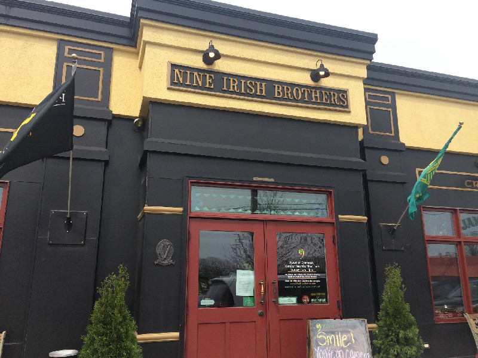

Ed Yother

Mostly Irish Traditional Music from West Lafayette Indiana
Singing and playing flute, tenor banjo, guitar, mandolin and octave mandolin.
Where I'll Be

I host an Irish Traditional Music session
Every Wednesday 7-10pm
West Lafayette, Indiana

I'll be playing solo at the 6th St Dive
Saturday July 29th 2024 8pm-12am
Lafayette, Indiana